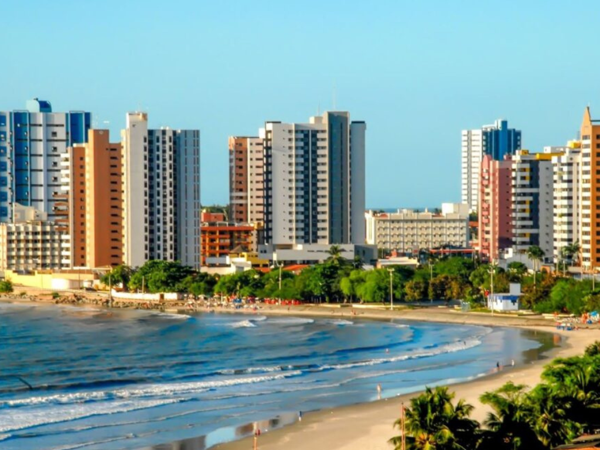

O Maranhão é um estado de transição única, onde a exuberância da Floresta Amazônica se encontra com a rusticidade do Cerrado e a força do litoral nordestino. Seu maior tesouro natural é o Parque Nacional dos Lençóis Maranhenses, um deserto de areias brancas pontilhado por lagoas de águas cristalinas que formam uma paisagem sem igual no mundo. Na capital, São Luís, o destaque é o centro histórico com seu casario colonial revestido de azulejos portugueses, reconhecido como Patrimônio Mundial pela UNESCO, e a cultura vibrante que pulsa através do Bumba Meu Boi e do ritmo singular do reggae maranhense.
